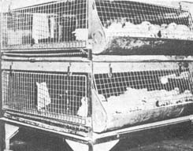

Homestead Chicken Production
By the Mother Earth News editors
January/February 1973
Back in 1949-before factory farming and the "pump 'em full of chemicals" school of agriculture blitzed the countrya fellow named Jack Widmer wrote a little book called PRACTICAL ANIMAL HUSBANDRY. Now that manual wasn't what you'd call completely exhaustive, the writing style wasn't the best and a few of the ideas it advanced-such as confining laying hens in cages-were later refined into the kind of automated farming that so many of us are fighting against these days.
Still, PRACTICAL ANIMAL HUSBANDRY contained a good deal of basic information that today's "homesteaders" all too often need and don't know where to find. I'm pleased, then, that the publisher of the book, Charles Scribner's Sons, has granted me permission to reprint excerpts from this out-of-print manual. I think that many of my readers will find the following information both interesting and informative. -MOTHER.
Excerpts from PRACTICAL ANIMAL HUSBANDRY by Jack Widmer are reprinted by permission of Charles Scribner's Sons. Copyright 1949 by Charles Scribner's Sons.
THE GOOD LIFE
Much-too much perhaps-already has been written about "the good life". Scores of books have told the long and often dreary tale of the joys of country living. Some have been clever and humorous dissertations of country experiences; of how the well went dry, how the goat sickened and died, and the dozens of problems that befall the amateur in his attempts to live off the land. Others, written with a perfectly straight face, have been devoted to scholarly studies of the joys of spreading a good table; how to thrill your friends with breast of guinea hen, home grown and home prepared. Chapters have been devoted to the philosophy of the tiller of the soil, of his nearness to his Creator as he toils with blistered hands among the peas and carrots often produced at fantastic costs.
Both extremes are of course ridiculous. The "Egg and I" sort of thing has thwarted the ambitions of many a couple who, with reasonable intelligence, learned advice and a bit of luck might have attained the joys of country living. The more serious and often impractical works have sent countless couples into the hinterlands with high hopes, strong backs and unlimited energy, only to discover that although the back-to-the-soil movement has its moments they are few and far between for those of little practical knowledge and experience.
Yet despite the obvious pitfalls that confront the amateur, thousands have made a financial success of agriculture, and are living a life so far superior to their urban cousins as to make a laughing matter of comparison. Many have specialized in one form or another of agriculture, and have established reputations as turkey raisers, cattle breeders, etc., etc. However in their enthusiasm for their speciality some have overlooked one of the most important phases of country living . . . the maintenance of a barnyard flock that produces a high standard of personal living for the tiller of the soil.
Strangely enough this oversight is not limited to the amateur. Previous to World War II we had been well acquainted with commercial wheat producers who, devoting their vast acreages to nothing but wheat, purchased tinned milk for their table; cattlemen who produced thousands of feeder cattle air annually and depended on their grocery store and meat market for every morsel of food that they and their cowpokes consumed, even to the extent of buying poor cuts of beef; cotton planters who did not maintain even a flock of chickens and therefore purchased eggs at high prices for their table. This same sort of foolishness was not at all uncommon even as late as 1938, and it took a world war, rationing and shortages to bring the "setting a good table" out of the mothballs where it had been packed some thirty years before.
Shortages of all commodities, rationing of butter, fats and countless other items, proved to the country dweller that he was losing out on the good life, with the result that it is now difficult to find a well run farm (regardless of acreage) that does not produce most of the food that is consumed by the operator and those dependent upon him for a living.
Amateur and professional agriculturists alike have discovered that it pays to fatten a few hogs, to breed and finish a few beeves each year, to run a hundred chickens and to produce and fatten many other members of the barnyard kingdom, if not for sale, at least in sufficient quantity to assure an ample supply for home consumption. They have found that they may just as well enjoy the advantages of living in the country, to make the farm produce the delicacies that are either unobtainable in the average rural community or are at least so costly that they are prohibited to the average rural purse. They have found that they may just as well have the finest cuts of beef for a relatively low cost, that squab on toast is within modest reach and that if tastes should run to smoked turkey, that may be enjoyed without presenting the proprietor of some plush bistro with a king's ransom. Many have found that a small and easily maintained mushroom bed will, along with their home grown beef present them with filet mignon without the customary bill of several dollars, and that they may as well live off the cream of the land, if they take the time and trouble to produce this cream.
From a strictly dollar and cent standpoint, the average agriculturist may well be amazed as to how cheaply he can produce these barnyard delicacies, for the maintenance of a barnyard flock works in a circle, one helping to defray the cost of producing others. Skim milk from his dairy cows will be a big factor in the fattening of his hogs, chickens, ducks and geese. Corn from a small patch will complete this fattening ration as well as producing feed for his beef animals, and the manure that these animals produce will in turn enrich his acreages as well as his garden patch that can be made to produce many of the root crops which will make ideal feed for his lambs, turkeys or whatever other small animals he may wish to produce. In grasshopper-infested areas, he will find that his poultry flocks will help to keep down these pests and his lawn and yards will grow lush when reinforced with the sheep manure that will be obtained from his sheep pens. Then too his sheep will keep roadways and lanes free from weeds and will utilize rough feed that would otherwise be wasted.
It is true that before World War II the storage of meats and vegetables was a major problem. Cured meats would keep for an indefinite period of time, but beef, chickens, ducks, geese and countless other barnyard products had to be consumed at once upon butchering or had to be canned, salted or dried. But now, with the advent of deep freeze units, cold storage locker systems and other refrigeration storage, much of the work of "putting up" home produced foods has been eliminated. No longer is it necessary to go through the weeks of vegetable and fruit canning that was once a major summertime task. No longer must meat be canned, for now meats are cut up into convenient roasts, chops, steaks, etc., and are stored in cold storage units along with package upon package of vegetables taken from the garden. With this method of food storage available throughout the land, animals may be butchered to suit the producer . . . friers in the early summer, roasting chickens later on, beef in the fall, and so on. Lambs may be put into the locker in their prime (about 100 pounds) and all animals may be butchered at the most suitable age and weight regardless of season or climatic conditions.
On our Horseshoe Ranch in Colorado and more recently on Toowoomba, our California farm, we have managed this sort of economy over a period of years (less time out for the war) and now most of our table marketing consists of merely determining the desired menu, opening the deep freeze unit, and the meal is ready for preparation. Wild game and fish is also stored in this manner and we have game dinners whenever the mood strikes us. It is natural that we should produce a surplus of many of the small barnyard animals and we have found a ready market at very good prices for all the surplus animals we have produced.
Of course location and productivity of the soil involved will have much to do with the economical success of such a venture, yet regardless of a natural fluctuation in feed cost in various localities, we have discovered that the top quality of our produce more than repays us for our time and trouble even though the cost mounts to retail prices, which is seldom the case.
When one stops to consider that even two years after the close of World War II the weekly ration of those living in England amounted to 2 oz. of butter, 4 oz. of meat, 2 lbs. 10 oz. of bread and 1 oz. of fats, it is not difficult to see why we feel it important to produce as many of the necessities of life as possible. During our war experiences we were continually impressed by the living standards of the rural dwellers of the occupied countries in comparison to those living in the thickly populated cities. We were amazed to find that the inhabitants of Normandy were fat and healthy, that they were producing practically all their own food and doing very well despite German occupation and Allied invasion. This was in terrific contrast to the hunger that was so evident in Paris and other French cities not two hundred miles distant. Even upon return to the United States in time for the meat shortages and skyrocketing prices, we found that those fortunate enough to be living on the land were doing quite well in comparison to those standing in the meat lines that were so common in many of our cities.
We are not agricultural economists nor do we claim to be, but we do feel that regardless of what happens to agricultural prices, those who produce their own meats and animal fats will always do so at a profit. If hog and cattle prices take a tumble it goes without saying that feed and labor costs must drop proportionately and the country dweller will always "set a good table" if he is willing to devote a little time and effort to the barnyard flock.
Perhaps the location of the establishment in question will be such that certain animals cannot be successfully produced, but there are few acreages in these United States, no matter the geographic location, that cannot profitably produce at least a few of the members of the barnyard kingdom that we shall discuss in this work. Their breeding and care will call for but little additional effort on the part of the owner, and the returns in good living and in the feeling of accomplishment that comes with successful animal husbandry will repay both professional and amateur alike many times over.
CHICKEN PRODUCTION
Chicken production for both eggs and meat is one of the oldest known agricultural pursuits. Evidence of poultry husbandry has been found in the Egyptian tombs and chickens have been kept in the domestic stage ever since. Today, chickens are kept the world over and there is no climate on the face of the globe that is not fitted for at least a limited production of both eggs and chicken friers and roasters.
Chickens are, of course, maintained in every section of the United States and are produced in all size flocks from the commercial chicken farms that maintain upwards from ten thousand birds, to back-yard flocks of less than 25 hens that are kept primarily for egg production for the families that maintain them. These small home flocks are an intriguing hobby, produce fresh eggs for the table that are not always readily obtainable on the market, and offer friers and roasting chickens that may be butchered at the prime of life and stored in cold storage for from eight to ten months at zero degree, Fahrenheit.
MAKING A START WITH CHICKENS
Before an intelligent selection of breed can be made the beginner should have at least a sketchy knowledge of breeds available. Breeds of chickens are divided into four major categories: (1) the American Class, (2) the Asiatic Class, (3) the English Class, and (4) the Mediterranean Class.
All varieties of the American class are clean legged, all have red lobes and all except the Lamona lay brown-shelled eggs. The breeds of this classification are the Chantecler, Dominique, Java, Jersey Black, Lamona, New Hampshire, Plymouth Rock, Rhode Island Red, Rhode Island White and Wyandotte. There are many varieties within these breed classifications with the Plymouth Rock being the classic example. Plymouth Rocks are divided into the following varieties: Barred, White, Buff, Silver-penciled, Partridge, Columbian and Blue.
The Asiatic class are breeds of large bodies, feathered shanks and are heavy boned. They all have yellow skin, except the Black Langshan, and they all produce brown-shelled eggs. The major breeds in this classification are the Brahma, Cochin, and the Langshan. Here too we find many varieties within breeds with the Cochin having Buff, Partridge, White and Black varieties.
The English class is made up of chickens that are good in size (if not quite as large as the Asiatic) and are kept primarily for meat. Except for the Cornish, which has a yellow skin, all English breeds have white skins and all produce brown-shelled eggs, except the Dorking and Red Cap which lay white eggs. The major breeds within the English classification are: Australorp, Cornish, Dorking, Orpington, and Sussex. Here too, one finds several varieties within breeds, the Cornish for instance coming in Dark, White, White-laced, Red and Buff.
The Mediterranean class is made up of breeds that are considerably smaller than either of the other three classifications and are kept primarily for egg production. They are not nearly as desirable for friers and broilers, however, they are non-broody (that is they will lay for longer periods without trying to set) and their eggs are always white-shelled, and therefore usually bring a higher price on the market. The Mediterranean class is made up of the Ancona, Blue Andalusian, Buttercut, Leghorn, Minorca and Spanish. The White Leghorn has become a popular egg producer the world over and this breed is maintained in tremendous numbers throughout the United States for its ability to produce great numbers of eggs. Here too, one finds many varieties within breeds, the Leghorn being represented by at least a dozen different varieties.
Using the above information as a guide the beginning poultry producer may start to think in terms of breeds. Obviously, if he is interested primarily in the production of eggs (and has a preference for white-shelled over those of brown) he will of course select one of the Mediterranean breeds . . . perhaps the popular White Leghorn. On the other hand, if he is interested in a dual-purpose chicken-one that produces both eggs and a medium-to-large carcass, and if he is prepared to sacrifice some egg production for this increase in dressed weight of butchered birds-then he may select one of the American breeds-the White Rock, Rhode Island Red, etc. Should he be interested only in meat producers and not concerned with the egg productive talents of the breeds, then he may select a chicken of the Asiatic class, perhaps the Brahma. Here on Toowoomba where we maintain a flock of but one hundred hens and are not interested in the commercial aspects of the chicken business, but are instead interested in producing enough eggs, friers and broilers for our table, we maintain the Rhode Island Red and have had excellent results with this dual-purpose breed. In Colorado we always produced White Rocks; however, this was done so that we could stay with the popular breed of the locality and now that we are in California we are again staying with the popular breed. Most farms in this, The Valley of the Moon, maintain either of two breeds-White Leghorns for those inter ested in egg production; Rhode Island Reds for those interested in meat animals. Some chicken fanciers have had excellent results with the "red-rock" cross. They claim a resulting chicken that is an excellent meat chicken as well as being a fine egg producer. However, the beginner, no matter his locality might find it to his advantage to stay with the popular breeds of his section so that if he should produce surplus chickens he may find a more ready market since he maintains that breed most popular in his neighborhood.
HOW TO PURCHASE
There are three major approaches to a start with chickens. (1) Day-old chicks may be purchased from a reputable hatchery. (2) Chicks that are from six to eight weeks old purchased from the hatchery. (3) Mature hens and roosters may be obtained, mated and their eggs hatched either under hens or in an incubator. All three methods have their advantages and disadvantages and the beginner will find it well worth his while to make a careful study of the three approaches before undertaking the production of chickens.
THE DAY-OLD CHICK
Assuming that choice of breed has been made and that a hatchery has been located that will supply day-old, strong, vigorous chicks, then we've prepared to start the growing of our flock. We have found that we may purchase our chicks sexed if we so desire: either all cockerels, all pullets, or "hatchery run," which usually means that we will have about half male, half female. It never pays to purchase cheap day-old chicks. Hundreds of hatcheries are in the day-old chick business and the prospective purchaser will find chicks priced all the way from five to twenty cents each. Cheap chicks are often of poor quality and will give unsatisfactory results.
There are two general methods of brooding these day-old chicks, both of which have proven satisfactory. First, day-old chicks may be placed under mature hens that have been set on either unfertile or glass eggs, or chicks may be brooded under an artificial brooder heated by either oil, coal or electricity. Local conditions will have much to do with the selection of which heating agent will be used. If natural gas is cheap, one might prefer to a§e gas; if not then kerosene may be the choice. Both are reliable and are preferred to electricity by those who have had difficulty due to power stoppages during crucial periods. Coal, once a very popular heating agent, is now used but little as it is most difficult to maintain a constant temperature with a coal fire.
When hens are used, the country dweller must be sure that the hens have been setting for at least a week, that they are ready to take on the responsibility of motherhood and that they are of amiable disposition. Chicks are then placed under the hens during the early hours of the night of their arrival from the hatchery. Some chicken producers put from 20 to 30 chicks under each large hen, while others contend that 15 is sufficient. This number will of course be affected by the number of chicks that we wish to brood in relationship to the number of setting hens on hand, and the breed involved. Naturally hens of the heavier breeds may successfully brood a few more chicks than those of the lighter varieties.
Hens must be confined to a brooding coop so constructed that chicks may run out through slats which restrain the hens, and feed and water must be placed so that the hen may reach them through the slats.
In the event that one is to purchase from 100 chicks upwards, the artificial brooder will prove the most satisfactory. Here, temperature may be rigidly controlled, danger to the chicks by being picked on the head by the hen is of course eliminated and one artificial brooder is much less work and worry than is the caring for a number of hens and their adopted families.
These brooders come in various sizes accommodating from 100 to 500 chicks each and the beginner will do well to plan in advance just how many chicks he intends to raise each year before investing in a brooder. In this regard, and if he does not plan on brooding more than one hundred each year, he may very easily construct his own brooder relying on heat produced by a series of light bulbs. Yet no matter what type of brooder is purchased or constructed, chicks should be kept at 95 degrees Fahrenheit for the first ten to fourteen days. The brooder room, or a section of the chicken house that has been fenced in for this brooding should be free from drafts, the floor covered with at least two inches of wood shavings or some other litter, and feed troughs and watering containers placed before the chicks by the time they are 48 hours old.
It is advisable to confine the chicks to the immediate vicinity of the brooder during the first few days. This may be accomplished by placing a circular mesh fence about the brooder allowing just enough space outside the heating arrangement for the placing of feeders and waterers. This space may then be gradually increased until the chicks have ample room to run either in or outside the brooder as they please.
After 14 days at 95 degrees Fahrenheit the temperature is lowered to 85 degrees for the second 14 days and then is again reduced to 75 degrees and kept at this temperature as long as the chickens require artificial heat. This time is influenced by several factors. First, heat must be maintained until the chicks have completely feathered out and if climatic conditions are severe it might be necessary for the chicks to have some artificial heat for another week or two. Chicks that have completely feathered out will require very little heat, however, many chicken fanciers have found that it pays to give them some heat especially during cold nights, shutting off the brooders during the warm portions of the daylight hours.
It has been found that chicks grow faster and consume more feed if a small light is maintained through the night. As we have already stated they should start to eat upon arrival from the hatchery and there are many commercially prepared mash feeds that are excellent. To begin, chicks should be fed all that they will clean up four times daily, then after they have reached three weeks of age this may be cut down to three times daily. After five weeks they may be fed morning and night. They are supplied with all the water they require and it is advisable to add some form of water disinfectant for not only will these preparations keep the water sterile but they also prevent diseases of the intestinal tract. Of course, it goes without saying that all feeders and waterers should be kept clean and must be thoroughly sterilized between broodings.
SIX-TO EIGHT-WEEK-OLD CHICKS
Many hatcheries offer chicks that have reached the age of six to eight weeks and therefore do not require heat. These chicks are kept by the hatchery operator much in the same manner as we have described under "day-old chicks" and inasmuch as they are completely feathered out all they require is a draft-proof home. Naturally, the cost of these older chicks is higher to compensate the hatchery operator for his brooding, feeding and death loss of the chicks, and the intelligent country dweller will of course save considerable money if he is able to take the chicks at one-day-old and to brood them himself.
Feeding is the same no matter what age the chicks are purchased and many beginners have found it advisable to purchase their first batch of chickens at this advanced age.
HOME GROWN CHICKS
Of the three methods of starting with chickens, the production of home grown chicks from one's own hens and roosters is perhaps the most satisfying if not always the most efficient. Here we must select our female breeders, our breeding males, mate them and then set the eggs either under the hen or in an artificial incubator. Hens will brood chicks without difficulty and when properly fed chicks raised by hens are less apt to contact disease, making faster and more vigorous growth than those artificially incubated and brooded.
Great care must be exercised in the selection of female breeders, for if quality is to be maintained hens must be culled often so as to eliminate all undesirable egg producers. Females selected for breeding must be good representatives of their respective breeds, must be properly marked, and must show good flesh and should give evidence of early maturity.
It goes without saying that hens should be good egg producers (for this is an inherited quality) and that they come from a long line of top producers. They should seldom go broody and if one is interested in the commercial aspects of the chicken business, it is important to keep hens that lay well throughout the late summer and fall for this is usually the high point in regards to wholesale egg prices.
The selection of male breeders is of even greater importance than that of the female. Each rooster will breed at least fifteen hens and thus the importance of the rooster over the hen is merely a matter of mathematics. The rooster should show a vigorous growth, be bold and masculine and should, of course, be a true representative of his breed. It is desirable to select males from mothers who have been good egg producers awl this may be accomplished if trap-nesting and pedigreeing is practical. Good roosters may be purchased from reputable pure-breed chicken farms and this is often the answer to topflight chicken production.
The collection of hatching eggs is relatively simple. Eggs are not saved as "hatchers" for the first ten days after the roosters have been placed with the hens, but after that time it may be safely assumed that eggs are fertile. Eggs should be stored at a temperature of from 50 to 60 degrees Fahrenheit and they will remain usable for ten days after having been laid. It is advisable to turn each egg each day until enough have been collected to make a "set".
Hens that have shown their desire to set by remaining on the nest are usually set on a straw nest that has been placed in a box about 18 inches square. This box should be placed in a quiet, well-sheltered, semi-dark portion of the chicken or hatching house, and after the hen has set on infertile or glass eggs for a minimum of three days from 13 to 15 fertile eggs may be placed under her. She should have feed and water handy to the nest so that she need not make long trips back and forth from nest to feed.
At the time of setting it may be necessary to dust the hen with sodium fluoride or some commercially prepared insecticide for if hens are infected with lice they may leave the nest during the incubation period. It is also advisable to examine the nest daily and to remove any eggs that have been broken and to clean up the nests if this has occurred.
Hens will usually hatch the chicks during the eighteenth or nineteenth day. They should be allowed to remain on the nest one day after hatching, and when the chicks are 36 hours old they should be removed to a brooder pen and fed as we have already prescribed under "day-old-chicks".
The development of commercial hatcheries has just about eliminated the necessity for incubators to be maintained on farms. Should the chicken fancier wish to set his eggs artificially all he need do is to take the eggs to a commercial hatchery and have them incubated at a much lower cost (not to mention trouble) than he could by maintaining his own incubator.
FEEDING THE CHICKS
There are two general methods of feeding chickens of all ages. (1) The all-mash method. (2) The mash-grain method. In the all-mash method chickens are fed nothing but mash feeds during their entire lifetime, while in the mash-grain method both mash and grain are fed.
Mash is made of a mixture of grains, salt and other minerals, oils and vitamins, all of which are finely ground into mash and fed to chickens in feeders. For those who maintain but a small number of chickens it might be advisable to purchase these mashes from commercial millers; however, for those who produce large numbers of chickens, or for those living in localities where mash is high in price in relationship to grain prices, then it may be advisable to mix and' grind the mash on the farm.
Regardless of what method of feeding is employed all baby chicks must be started on all-mash rations for at least the first four weeks. After that chicks may be fed a mash-grain ration.
ALL-MASH METHOD:STARTING & GROWING DIETS
In the all-mash method the following rations (United States Department of Agriculture) have been found satisfactory no matter whether the chicks are being raised in brooder houses or chick batteries.
*1. Or 0.12 part, by weight of fortified cod-liver oil or fortified sardine oil that contains not less than 400 A.O.A.C chick units of vitamin D per gram. If some other source of vitamin D is used, the quantity should be such that each pound of mixed feed will contain between 180 and 215 A.O.A.C. chick units of vitamin D.
*2. If the chicks have access to range and plenty of .sunshine the cod-liver oil or other source of vitamin D may be omitted after the eighth week.
MASH-GRAIN METHOD STARTING & GROWING DIETS
In the mash-grain method the following starting and growing mashes may be used:
†This is the official unit of the Association of Official Agricultural Chemists. It is equivalent to one International Unit of the kind of vitamin D that is in pure cod-liver oil.
*3. Or 0.25 part, by weight, of fortified cod-liver oil or fortified sardine oil that contains not less than 400 A.O.A.C. chick units of vitamin D per gram. If some other source of vitamin D is used, the quantity should be such that each pound of mixed feed will contain between 360 and 4.30 A.O.A.C chick units of vitamin D.
*4. If the chicks have access to range and plenty of sunshine, the cod-liver oil or other source of vitamin D may be omitted after the eighth week.
After the chicks have reached four to six weeks of age, they may be fed any of the following grain rations together with the mash ration. This grain mixture should be fed in separate feeders from the mash so that the chicks may choose from both feeders:
These grain rations must be added gradually with only about 10% of the mash ration being fed the first day and this amount gradually increased until about equal parts of mash and grain are fed by the time the chicks are 15 to 16 weeks old.
ALL-MASH METHOD: LAYING DIETS
In the feeding of laying and breeding stock the following rations are recommended when the all-mash method is being followed:
*5. Or about 0.3 part, by weight, of fortified cod-liver oil or fortified sardine oil that contains not less than 400 A.O.A.C chick units of vitamin D per gram. If some other source of vitamin D is used, the quantity should be such that each pound of mixed feed will contain between 500 and 600 A.O.A.C chick units of vitamin D.
*6. If the chickens have access to range and plenty of sunshine, one-half of the cod-liver oil may be omitted.
MASH-GRAIN METHOD: LAYING DIETS
If the mash-grain method is employed the following laying mashes are recommended:
*7. Or about 0.6 part, by weight, of fortified cod-liver oil or fortified sardine oil that contains not less than 400 A.O.A.C. chick units of vitamin D per gram. If some other source of vitamin D is used, the quantity should be such that each pound of mixed feed will contain between 1,000 and 1,100 A.O.A.C. chick units of vitamin D.
*8. If the chickens have access to range and plenty of sunshine, one-half of the cod-liver oil may be omitted.
Any of the grain mixtures suggested for baby chicks may be fed together with these mashes for laying and breeding chickens, equal parts of mash and grain being offered the animals. In the event that egg production should decrease it might be advisable for the poultry producer to increase the mash ration over that of grains to increase egg production. In addition to the above feeds sand (or grit) and oyster shell is kept before all mature chickens at all times.
HOUSING THE CHICKS
There are two general methods of housing and caring for chickens. (1) Chickens who are maintained in colony houses and are permitted to range in either chicken runs or on pasture. (2) Chickens raised on wire and never permitted to touch the ground. Both methods have advantages and the choice will depend on the individual facilities available to each chicken fancier.
In the first method, baby chicks are reared as described under "the day-old chick" and are then transferred from the brooder house to the colony after they have feathered out and no longer require heat. They are then permitted to go out-of-doors and are fed either in feeders that are placed on the ground or inside the chicken house. Obviously this method requires considerable space for animals must have runs of good size or chicken-tight fenced pastures to make this practical. In this method the obvious disadvantage is that chicken runs must be plowed from time to time so as to retard the spreading of disease and a higher investment is required for fencing.
In the second method, chicks are removed from the brooder house if one is used rather than starting in batteries and are placed either in batteries or wire floored sun-porches that will be their home for their entire stay on the farm. This confined method of chicken production has worked out very nicely in many localities for chickens do not run off as much fat, there is less chance for the spread of disease so often carried in litter, and they are easily cared for in the limited space required.
Those preferring the first method contend that they save considerable feed by the use of inexpensive pasture, while other fanciers contend that chickens waste more fat than they can put in by running in large areas. This then is strictly a personal problem and one that must be decided by each producer to suit his own particular needs. Suffice to say that chickens have been very successfully produced by both methods and local conditions must be the deciding factor.
Yet regardless of whether chickens are permitted to run in paddocks or are reared on wire, the maintenance of a flock of chickens will be a great asset to those living in the country. They convert various plant and animal materials into meat and eggs that might otherwise be wasted. They will be a source of fresh eggs during most of the year and they will do much to give variety to table meats. A flock of 100 chickens will supply all the friers, roasters, and fricassee chickens that the average family can ever consume and they will do this at a very reasonable cost. Chickens (especially after they have passed their eighth week) require very little care and if their quarters and laying boxes are conveniently arranged, the country dweller need devote but a few minutes each day to their maintenance.
|
Three-day-old chicks in a battery type chick starter. Chicks are maintained in this battery for the six weeks in which heat is required in a temperate climate. |
 Broodering chicks on wire is becoming increasingly popular. Sanitation is easier to maintain and cleaning of the brooder house is far less work than in the changing of litter. |
An excellent type of poultry feeder. Note that the feeder is set up off the floor on a wire platform. This keeps the chicks from scratching in the droppings and is the answer to clean feeding. |
|
Raising chickens on wire. This is a typical ""frier"" producing set-up. These chicks have lived on wire from the time they were hatched and are much less susceptible to disease than those kept in litter. |
 These hens have never touched the ground. They were grown on wire and were transferred to these individual laying cages as pullets. Records of egg production are readily maintained and non-producers may be readily eliminated. |
|
|
|
|
|
|
|
|
|
|
|
|
|
|
|
|
|
|
|
 |
|
|
|
|
|